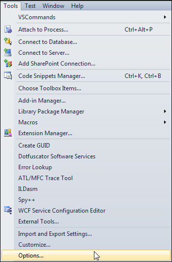
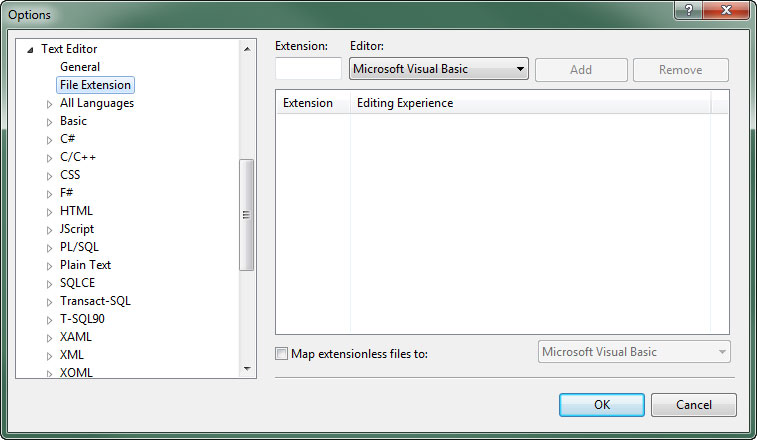
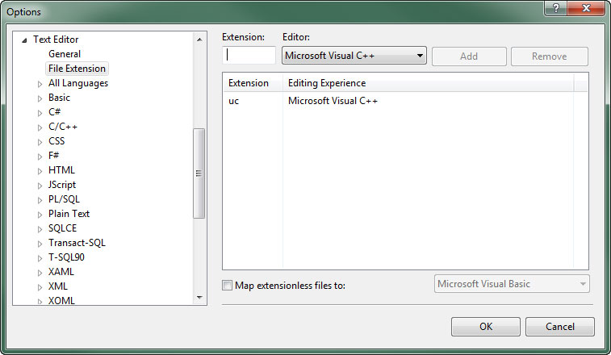
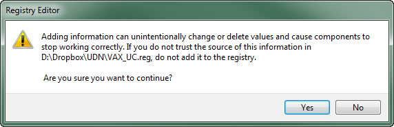

UDN
Search public documentation:
UsingVAXWithUnrealScriptJP
English Translation
中国翻译
한국어
Interested in the Unreal Engine?
Visit the Unreal Technology site.
Looking for jobs and company info?
Check out the Epic games site.
Questions about support via UDN?
Contact the UDN Staff
中国翻译
한국어
Interested in the Unreal Engine?
Visit the Unreal Technology site.
Looking for jobs and company info?
Check out the Epic games site.
Questions about support via UDN?
Contact the UDN Staff
UnrealScript とともに「Visual Assist X」を使用する
概要
Visual Assist X は、「Visual Studio」を使用するプログラマーに、リファクタリング、強化型インテリセンス、その他ワークフロー強化機能を提供していますが、今回、UnrealScript に対応することになりました。
バージョンとインストール
- Visual Assist X - Build 1862 ビルドノート
- [Tools] (ツール) メニューで、[ Options ] (オプション) を選択して、「Visual Studio」の [Options] ダイアログを開きます。

- [ Text Editor ] (テキストエディタ) のセクションを展開して、[ File Extension ] (ファイル拡張子) を選択します。ここで、ファイル拡張子のための新たなハンドラを追加することができます。

- [ Extension ] (拡張子) 欄に uc を記入し、[ Editor ] に Microsoft Visual C++ を選択します。 ボタンをクリックすることによって、
uc拡張子のためのハンドラを追加します。

-
uciのファイル拡張子についても、この前のステップを繰り返します。 - をクリックすることによって、変更を保存します。
UnrealScript のサポートを有効化する
- 下記のテキストをコピーし、
.regファイル拡張子を付けたテキストファイルに保存します。- 「Visual Studio 2010」
Windows Registry Editor Version 5.00 [HKEY_CURRENT_USER\Software\Whole Tomato\Visual Assist X\VANet10] "EnableUC"=hex:01
- 「Visual Studio 2008」
Windows Registry Editor Version 5.00 [HKEY_CURRENT_USER\Software\Whole Tomato\Visual Assist X\VANet9] "EnableUC"=hex:01
- 「Visual Studio 2010」
- 新たなレジストリファイルを起動するために、ダブルクリックするか、右クリック コンテクストメニューから [ Merge ] (結合) を選択してください。
- UAC (ユーザーアカウント制御) によって、ファイルを実行するかどうか尋ねられる場合があります。その場合は、
 ボタンをクリックします。
ボタンをクリックします。
- レジストリを改変しようとしているという警告が表示されます。 ボタンをクリックして、続行します。

- 結合に成功すると、レジストリが更新され、次のようなメッセージが表示されます。

UnrealScript のスニペットをセットアップする
-
C:\Users\を\AppData\Roaming\VisualAssist\Autotext\cpp.tpl C:\Users\にコピーします。\AppData\Roaming\VisualAssist\Autotext\uc.tpl -
uc.tplファイルが作成されると、VA Snippet (スニペット) エディタの中に、UnrealScript がノードとして表示されます。 - C++ のノードから UnrealScript のスニペットを削除し、UnrealScript のノードから C++ のスニペットを削除します。